Bienvenido a Dota 2 ProTracker
Busca jugadores, estadísticas y sigue la meta actual.
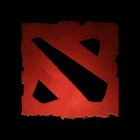
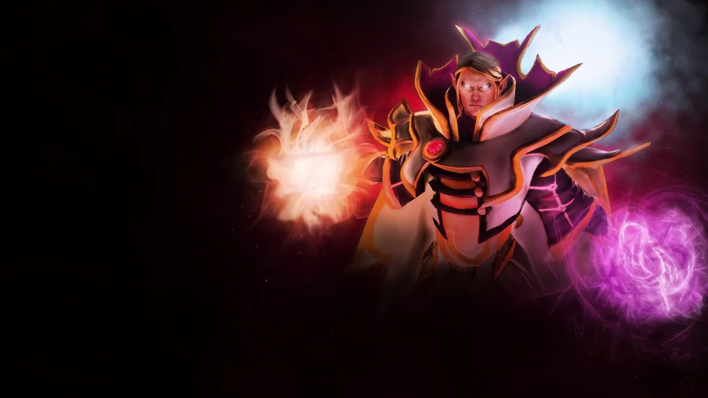
 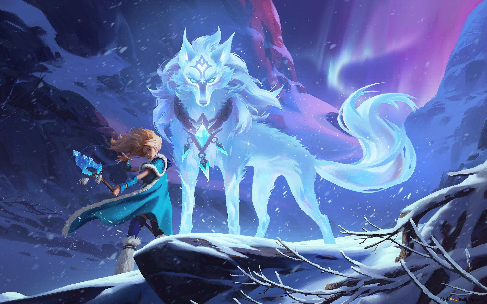
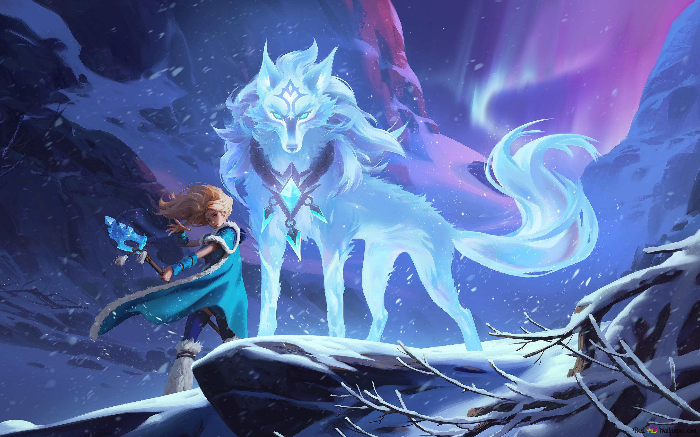
 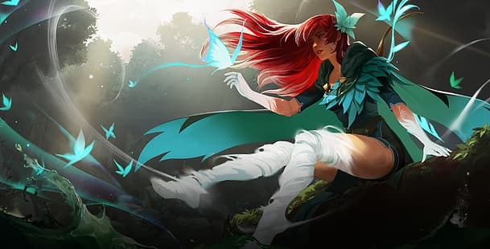
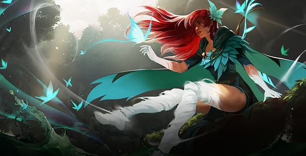
 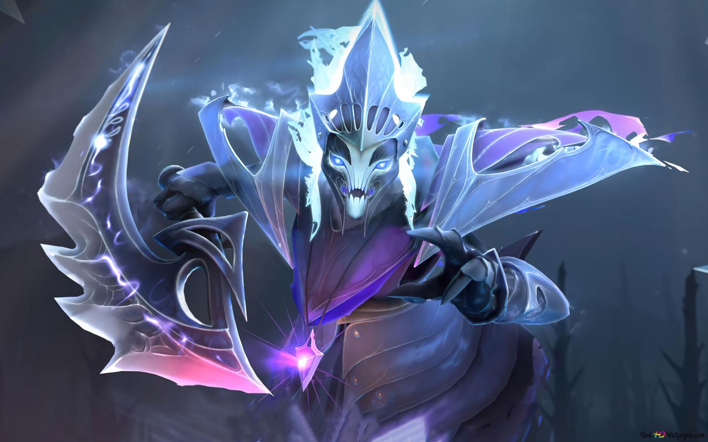
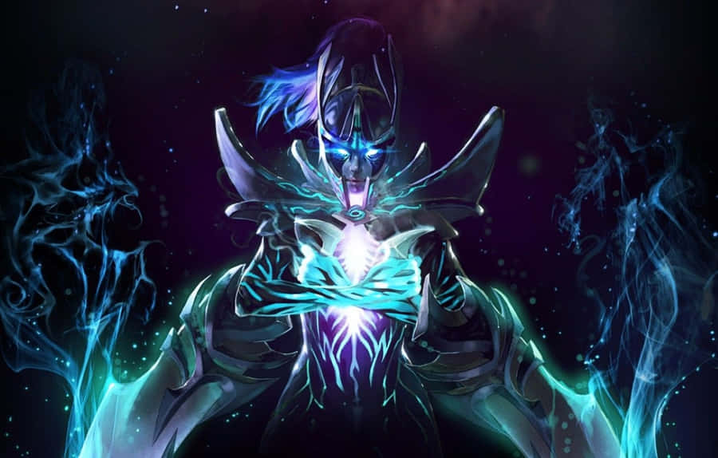
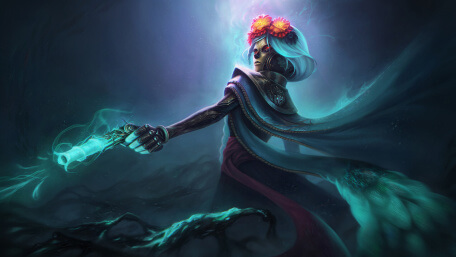
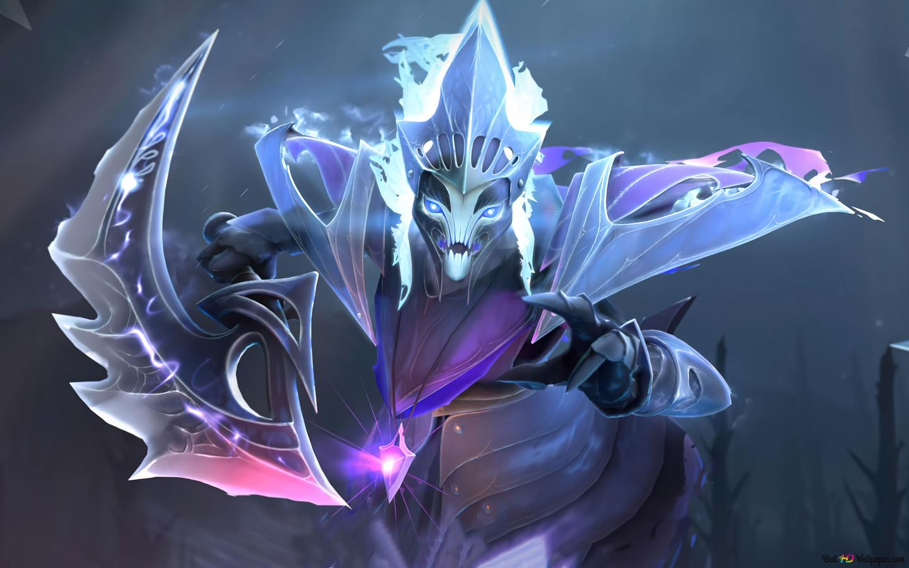
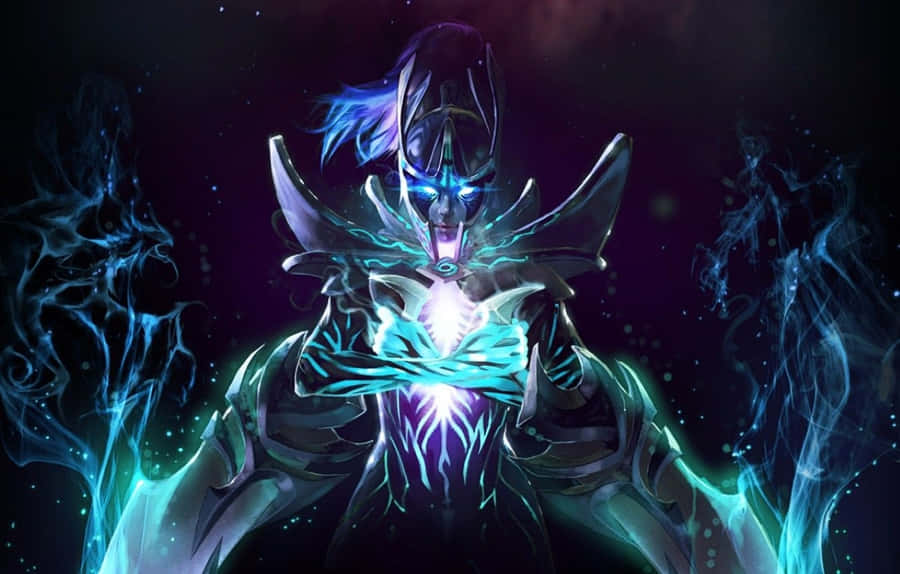
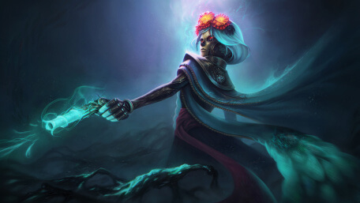
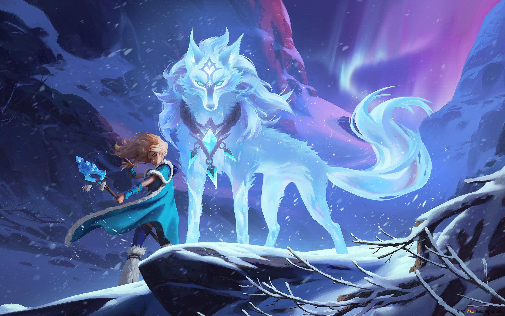
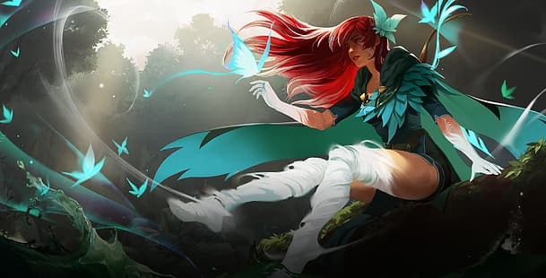
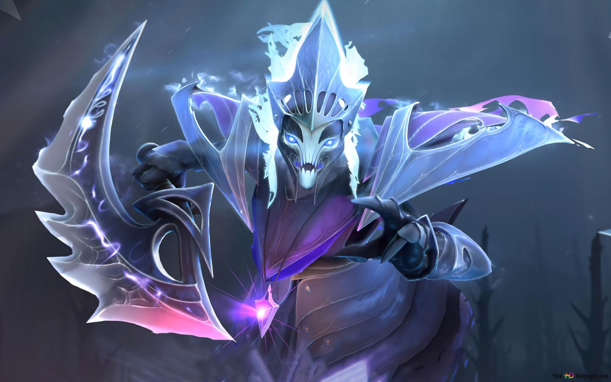
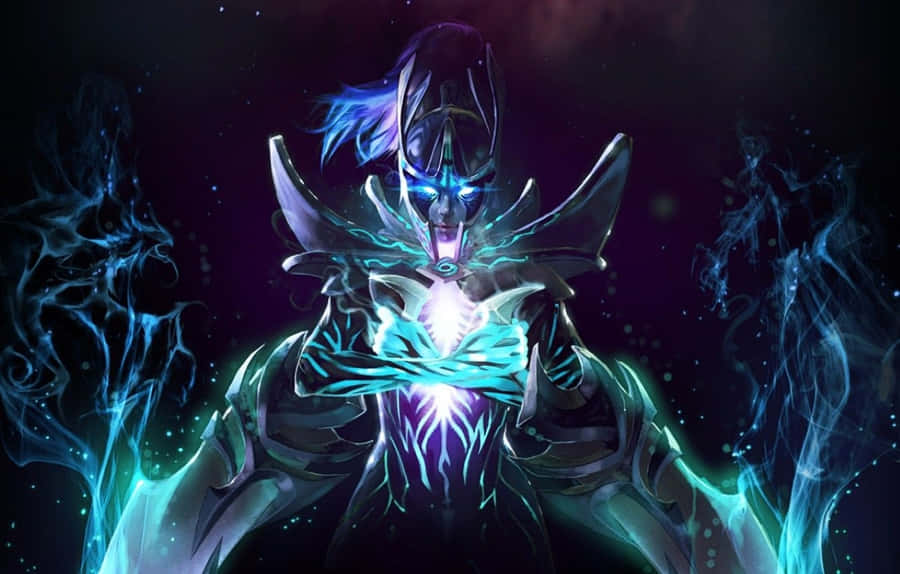
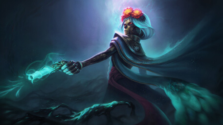
¡Explora los héroes y sus fondos!
Estadísticas en Tiempo Real
Meta actual
Aquí se mostrarán estadísticas de héroes y estrategias.
Héroes
Estadísticas y winrate por héroe.
Jugadores
ProTracker de jugadores.